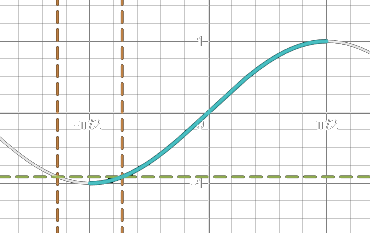
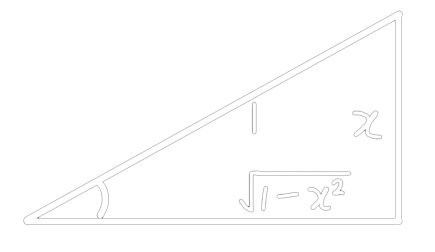

(lecture) ## (Non)Pos vs (Non)Neg \begin{aligned} \text{positive: }x\gt0&\quad\text{nonpositive: }x\le0\\ \text{negative: }x<0&\quad\text{nonnegative: }x\ge0 \end{aligned}
S=\{x\in\text{category}|\text{condition}\}
| Set Notation | Interval Notation |
|---|---|
| \{x\in\R\vert a\le x<b\} | [a,b) |
| \{x\in\R\vert a\le x\} | [a,\infty) |
\begin{aligned} \R&\quad\text{Real}&&\N&\quad\text{Natural}\\ \Bbb{Q}&\quad\text{Rational}&&\Bbb{C}&\quad\text{Complex}\\ \Z&\quad\text{Integers}&&\empty&\quad\text{Empty}\\ \end{aligned}
|a|=\begin{cases} a&\text{if }a\ge0\\ -a&\text{if }a\lt0 \end{cases} - distance between 2 real numbers is \text{dist}(a,b)=|b-a| - distance between P and Q is \text{dist}(P,Q)=\sqrt{(x_1-x_2)^2+(y_1-y_2)^2}
punctured interval of radius \delta around a | | Open | Closed | | :——-: | :—————————-: | :———————: | | Geometric | (a-\delta,a)\cup(a,a+\delta) | (a-\delta,a+\delta) | | Algebraic | 0\lt\vert x-a\vert\lt\delta | \vert x-a\vert<\delta |
(lecture) ## Rational don’t cross multiply \begin{aligned} \frac pq&<\frac rs\\ \frac pq-\frac rs&<0\\ \frac{ps-rq}{qs}&<0 \end{aligned} - then find critical points and test values
split |f(x)|\lt a to - f(x)\lt a - -a\lt f(x)
(textbook) > a function f from a set A to a set B
is an assignment f that associates to
each element x of the
domain set A exactly 1
element f(x) of the
codomain set B
> f:A\to B
(lecture) f:\R\to\R\text{ defined by }f(x)=x^2\\ \begin{aligned} \text{Domain}(f)&=\{x\in\R\}\\ \text{Range}(f)&=\{y\in\R|y\ge0\}\\ \text{Codomain}(f)&=\{x\in\R\}\\ \end{aligned} - example f(x)=\frac1{\sqrt{x^2-1}}\\ f(x)\text{ is defined if}\begin{cases} \sqrt{x^2-1}&\neq0\\ x^2-1&\ge0 \end{cases}\Rarr x^2-1\gt0\\ \begin{aligned} x^2-1&\gt0\\ x^2&\gt1\\ |x|&\gt1\\ x&\in(-\infty,1)\cup(1,\infty)=\text{Dom}(f)\\ \end{aligned}
Graph represents a explicit function iff every vertical line intersects the graph in at most 1 point
f is one-to-one if \forall a,b\in\text{Dom}(f), a\neq b\implies f(a)\neq f(b)
(lecture)
two functions are equal iff
- f(x)=g(x)\quad\forall x\in\text{Dom}(f)
- f(x) and g(x) are defined on the same domain
\begin{aligned} f(x)&=\frac{x^2-1}{x-1}&g(x)&=x+1\\ \text{Dom}(f)&=\R\setminus\{1\}&\text{Dom}(g)&=\R\\ \end{aligned}\\ \begin{aligned} \because&\text{Dom}(f)\neq\text{Dom}(g)\\ \therefore&f(x)\neq g(x) \end{aligned}
even if f(-x)=f(x)
odd if f(-x)=-f(x)
f(x)=x^3+3\\ f(-x)=-x^3-3\neq f(x)\neq-f(x)\\ \therefore\text{neither}
f is inverse of g if
f has an inverse iff f is one-to-one
1. f\circ g=x\quad\forall x\in\text{Dom}(f) 2. g\circ f=x\quad\forall x\in\text{Dom}(g)
to find inverse 1. do y=f(x) 2. interchange x and y 3. solve for y
(lecture)
f\circ g=f(g(x))
\text{Dom}(f\circ g)=\{x\in\text{D}_g|g(x)\in\text{D}_f\} where \text{D}_f=\text{Dom}(f)
(lecture)
exp(x)-2(3^x)=\left(e^{\ln-2}\right)\left(e^{\ln3^x}\right)=-\left(e^{\ln-2}\right)\left(e^{x\ln3}\right)=-e^{\ln2+x\ln3}
\begin{aligned} \ln\left(\frac{x-1}2\right)&\gt0\\ \frac{x-1}2&\gt1\quad\text{(}f(x)=e^x\text{both side)}\\ x&\gt3\quad\text{Answer: }x\in(3,\infty) \end{aligned}
(lecture)
sin()\sin(x)=\textcolor{lime}{\sin(\pm\pi-x)}+2\pi n \begin{aligned} 4\sin^2x&=1\\ 4\sin^2x-1&=0\\ (2\sin x-1)(2\sin x+1)&=0\\ \end{aligned}\\ \,\\ \begin{aligned} 2\sin x-1&=0&2\sin x+1&=0\\ 2\sin x&=1&\sin x&=-\frac12\\ \sin x&=\frac12&\sin(-x)&=\frac12\\ x_1&=\frac\pi6+\textcolor{lime}{2\pi n}&x_1&=-\frac\pi6+\textcolor{lime}{2\pi n}\\ x_2&=\left(\textcolor{aqua}{\pi-\frac\pi6}\right)+\textcolor{lime}{\textcolor{lime}{2\pi n}}\quad\because\text{odd}&x_2&=\left(\textcolor{aqua}{\frac\pi6-\pi}\right)+\textcolor{lime}{2\pi n}\quad\because\text{odd} \end{aligned}\\ \begin{aligned} \therefore x_1&=\pm\frac\pi6+\textcolor{lime}{2\pi n}\\ x_2&=\pm\frac{5\pi}6+\textcolor{lime}{2\pi n}\\ n&\in\Z \end{aligned}
cos()\cos(x)=\textcolor{lime}{\cos(-x)}+2\pi n \begin{aligned} \cos x&=\frac{\sqrt3}2\\ x_1&=\pi/6+\textcolor{lime}{2\pi n}\\ x_2&=\textcolor{aqua}{-\pi/6}+\textcolor{lime}{2\pi n}\quad\because\text{even}\\ \therefore x&=\pm\pi/6+\textcolor{lime}{2\pi n},n\in\Z \end{aligned}
cot() (or
tan())\tan(x)=\textcolor{lime}{\tan(x)+\pi n} \begin{aligned} \sqrt3\cot(3x)+1&=0\\ \cot(3x)&=-\frac1{\sqrt3}\\ 3x&=\text{atan}(-\sqrt3)+\textcolor{lime}{\pi n},n\in\Z\\ 3x&=\frac{2\pi}3+\textcolor{lime}{\pi n}\\ x&=\frac{2\pi}9+\frac{\textcolor{lime}{\pi n}}3,n\in\Z \end{aligned}
\begin{aligned} \sin\left(-\frac{3\pi}4\right)&=\sin\left(\frac{3\pi}4-\pi\right)=\sin\left(-\frac\pi4\right)\\ &=-\sin\left(\frac\pi4\right)=\frac{\sqrt2}2 \end{aligned}
\text{asin}(\sin(-2))=\text{asin}(\sin(2-\pi))=2-\pi\\ \because-2\lt\textcolor{aqua}{-\pi/2}\lt2-\pi

\cos(\text{asin\,}x)=\sqrt{1-x^2}
